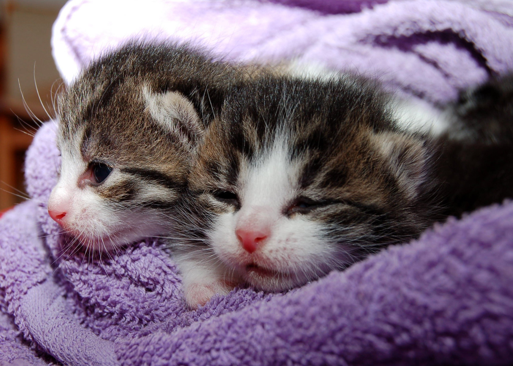

|
Интересные факты
Главная страница
Почему котики милые?
Зачем котики тыкают в нас лапками?
|
Котики и почему их любят.

Кошка (лат. Felis catus) — домашнее животное, одно из наиболее популярных (наряду с собакой) «животных-компаньонов».
Котики это животные которые обладают очаровательной внешностью.(по подробнее в ссылке выше) Котики любят придти к хозяину и покувыркаться, помурчать и потыкать в тебя лапами.(по подробнее в ссылке выше)

Так все-таки почему их любят?
Возможно кошка сама дает нам возможность любить ее. Кошки с огромным удовольствием принимают заботу и ласку.
Так, что так привлекает людей в домашних кошках? Для того, чтобы разобраться в этом вопросе выделим предполагаемые причины
- Размер.
Кошки небольшого размера, их можно с легкостью поднимать на руки, положить на коленки. В доме животное не занимает много места и большинство кошек будет комфортно себя чувствовать в квартире любой площади.
- Простота в уходе
Кошек не нужно регулярно мыть, выгуливать, достаточно организовать питание, периодически менять туалет, иногда вычесывать. Животное также можно оставить на несколько дней одного в доме, обеспечив ему еду, питье, польза.
- Шерсть.
Согласитесь, густая кошачья шерсть - это достоинство кошачьих. А человеку тактильно приятно прикасаться к такой шерсти и гладить животное. Шерсть у большинства кошек мягкая, пушистая, шелковистая.
- Мурчание.
Когда кошка от удовольствия с общением с человеком начинает издавать мурчащие стрекочущие звуки - это означает доверие к человеку и любовь. Кошке приятны действия человека или просто его присутствие рядом и кошка мурлычит, а человеку приятно слышать эти звуки. Ведь ученые выяснили, что для человеческого уха вибрации на такой частоте выравнивают кровяное давление, улучшают эмоциональный фон, стабилизируют сердечные сокращения.
- Трение и тактильность.
Кошки часто трутся о ноги хозяина, ложатся на колени, стопы, руки, и даже лицо человека. Все это, говорит о доверии к хозяину, животное спокойно и чувствует себя в безопасности. А что человек? Человеку данные действия животного приятны и умилительны. Теплое пушистое тельце лежит рядом с вами и эти согревает и тело и душу.
Тактильные контакты – лучший антистресс и отличное успокоительное средство. Так приятно почесывать за ушком, прижиматься к теплому тельцу.
- Визуальная и эстетическая привлекательность
Кошки красивы и грациозны, пропорциональны. Кошка следит за своей шерсткой, умывается и вылизывается. Многообразие пород, окрасов позволяет каждому желающему подобрать питомца с учетом собственных предпочтений.
- Польза.
Кошки издавна живут в тандеме с человеком.
Кошки еще 9-10 тысяч лет назад сами пришли к первым земледельцам, которые страдали от мышиной напасти- их никто не приручал, просто они привыкли охотиться в степи на грызунов и приходили туда, где их стало больше и их проще было поймать.
Кошка ловит мелких грызунов, тем самым освобождая жилище человека от вредителей и непрошеных гостей, за это получает теплый кров и питание. Ловкость кошки поразительна на охоте. Тонкое чутье и отличный слух, бесшумные движения и резкость, точность броска - всё это помогает кошке поймать добычу. Человек никогда не сможет конкурировать в этом с кошачьими. Да и никакая мышеловка или другие ухищрения не справятся лучше, чем кошка.
- Чистоплотность
Кошки – очень чистоплотные животные, они умываются более десяти раз в день. С помощью вылизывания они поддерживают шубку и кожу в чистоте: удаляют паразитов, различные загрязнения, отмершие волоски, тем самым предотвращая появление колтунов на шерсти, и способствуя обновлению шерсти.
- Энергетика.
Биоэнергетики уверены, что позитивная аура котов позволяет снимать усталость и мигрень, благоприятно воздействует на нормализацию давления и пульса, сокращение болей в больных внутренних органах.
Ученые утверждают, что кошки снижают риск инсульта или инфаркта хозяина на 30 процентов.
- Самостоятельность и независимость.
Кошка на самом деле может хотеть много внимания, когда хозяин находится рядом, но она также может и сама позаботиться о себе. Эти животные не боятся одиночества, в отличии от собак. Независимость также означает, что одинокий хозяин, который вероятно много работает, чтобы обеспечить себя, может оставить кошку в одиночестве на длительное время дома.
|